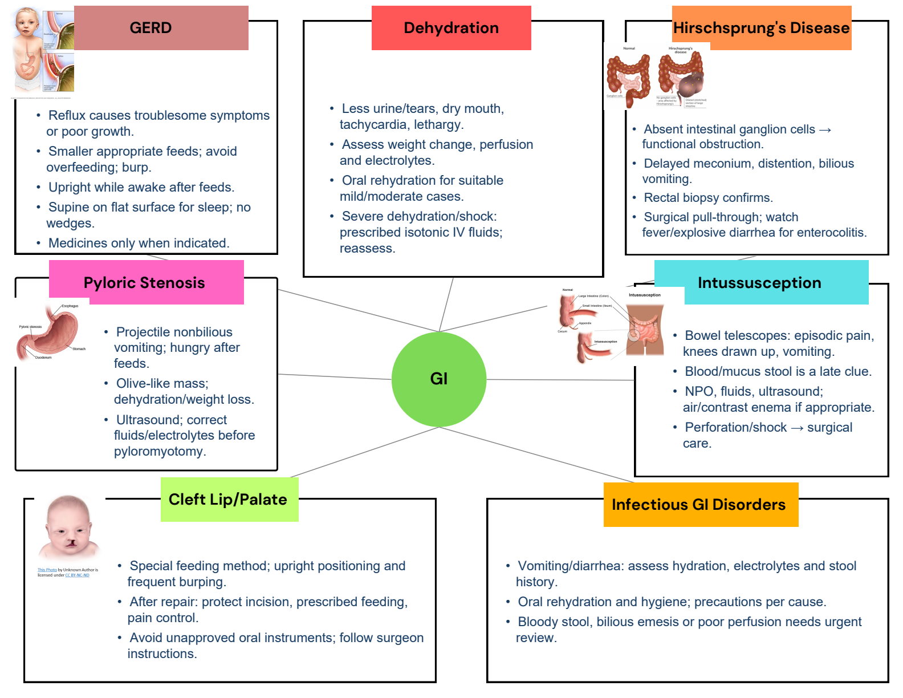
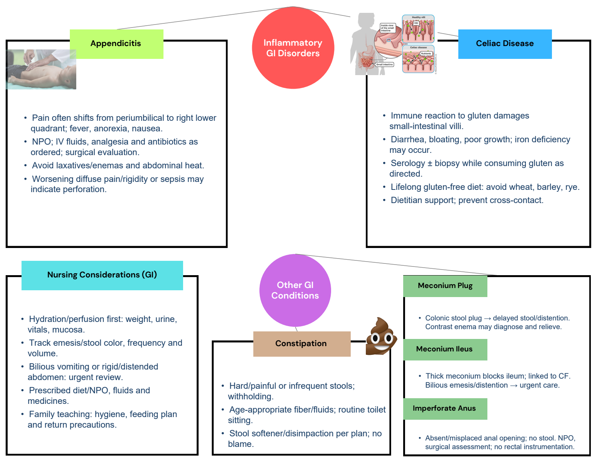

Completed maps with every original diagram. Switch to the original for blank practice.
1 / 2 Pediatric gastrointestinal disorders

Completed map · original artwork + added blue notesCompleted study notes · suggested additions
GERD
- Reflux causes troublesome symptoms or poor growth.
- Smaller appropriate feeds; avoid overfeeding; burp.
- Upright while awake after feeds.
- Supine on flat surface for sleep; no wedges.
- Medicines only when indicated.
Dehydration
- Less urine/tears, dry mouth, tachycardia, lethargy.
- Assess weight change, perfusion and electrolytes.
- Oral rehydration for suitable mild/moderate cases.
- Severe dehydration/shock: prescribed isotonic IV fluids; reassess.
Hirschsprung disease
- Absent intestinal ganglion cells → functional obstruction.
- Delayed meconium, distention, bilious vomiting.
- Rectal biopsy confirms.
- Surgical pull-through; watch fever/explosive diarrhea for enterocolitis.
Pyloric stenosis
- Projectile nonbilious vomiting; hungry after feeds.
- Olive-like mass; dehydration/weight loss.
- Ultrasound; correct fluids/electrolytes before pyloromyotomy.
Intussusception
- Bowel telescopes: episodic pain, knees drawn up, vomiting.
- Blood/mucus stool is a late clue.
- NPO, fluids, ultrasound; air/contrast enema if appropriate.
- Perforation/shock → surgical care.
Cleft lip / palate
- Special feeding method; upright positioning and frequent burping.
- After repair: protect incision, prescribed feeding, pain control.
- Avoid unapproved oral instruments; follow surgeon instructions.
Infectious GI disorders
- Vomiting/diarrhea: assess hydration, electrolytes and stool history.
- Oral rehydration and hygiene; precautions per cause.
- Bloody stool, bilious emesis or poor perfusion needs urgent review.
Original selectable text
Exact extraction; text embedded inside pictures remains in the full-size original visual.
GI
GERD
Dehydration
Hirschsprung's Disease
Pyloric Stenosis
Intussusception
Cleft Lip/Palate
Infectious GI Disorders
2 / 2 GI priorities and newborn obstruction

Completed map · original artwork + added blue notesCompleted study notes · suggested additions
Appendicitis
- Pain often shifts from periumbilical to right lower quadrant; fever, anorexia, nausea.
- NPO; IV fluids, analgesia and antibiotics as ordered; surgical evaluation.
- Avoid laxatives/enemas and abdominal heat.
- Worsening diffuse pain/rigidity or sepsis may indicate perforation.
Celiac disease
- Immune reaction to gluten damages small-intestinal villi.
- Diarrhea, bloating, poor growth; iron deficiency may occur.
- Serology ± biopsy while consuming gluten as directed.
- Lifelong gluten-free diet: avoid wheat, barley, rye.
- Dietitian support; prevent cross-contact.
GI nursing interventions
- Hydration/perfusion first: weight, urine, vitals, mucosa.
- Track emesis/stool color, frequency and volume.
- Bilious vomiting or rigid/distended abdomen: urgent review.
- Prescribed diet/NPO, fluids and medicines.
- Family teaching: hygiene, feeding plan and return precautions.
Constipation
- Hard/painful or infrequent stools; withholding.
- Age-appropriate fiber/fluids; routine toilet sitting.
- Stool softener/disimpaction per plan; no blame.
Meconium plug
- Colonic stool plug → delayed stool/distention. Contrast enema may diagnose and relieve.
Meconium ileus
- Thick meconium blocks ileum; linked to CF. Bilious emesis/distention → urgent care.
Imperforate anus
- Absent/misplaced anal opening; no stool. NPO, surgical assessment; no rectal instrumentation.
Original selectable text
Exact extraction; text embedded inside pictures remains in the full-size original visual.
Inflammatory
GI Disorders
Appendicitis
Other GI
Conditions
Atrioventricular
Defect
Meconium Plug
Celiac Disease
Constipation
Meconium Ileus
Imperforate Anus
Nursing Considerations (GI)